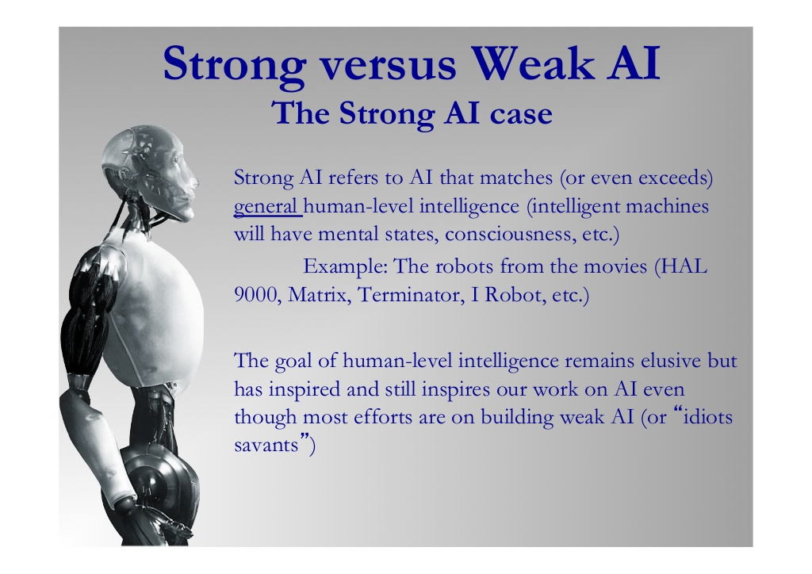

There are two different types of AI, strong AI and weak AI. Weak AI does everyday tasks that normally require some thinking to complete. Contrastingly, the goal of creating strong AI is to do nothing less than create a thinking, intelligent machine. Weak AI is easy to make, almost trivial, in fact. Even you or I could make weak AI! Strong AI has a complication when being made though, a curse, almost. Once AI has been created, a person looking at it may believe that it is strong AI, but when they find out how it works, they realise that it isn't smart at all, thus it is just weak AI when you discover how it works.
